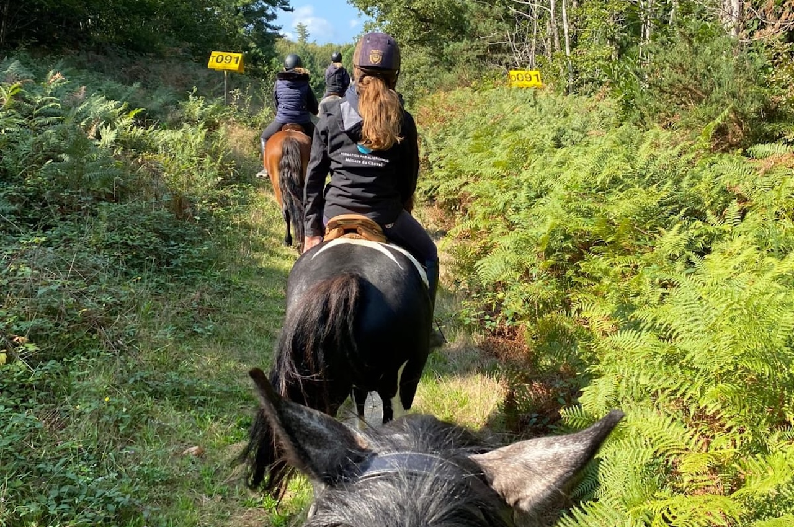
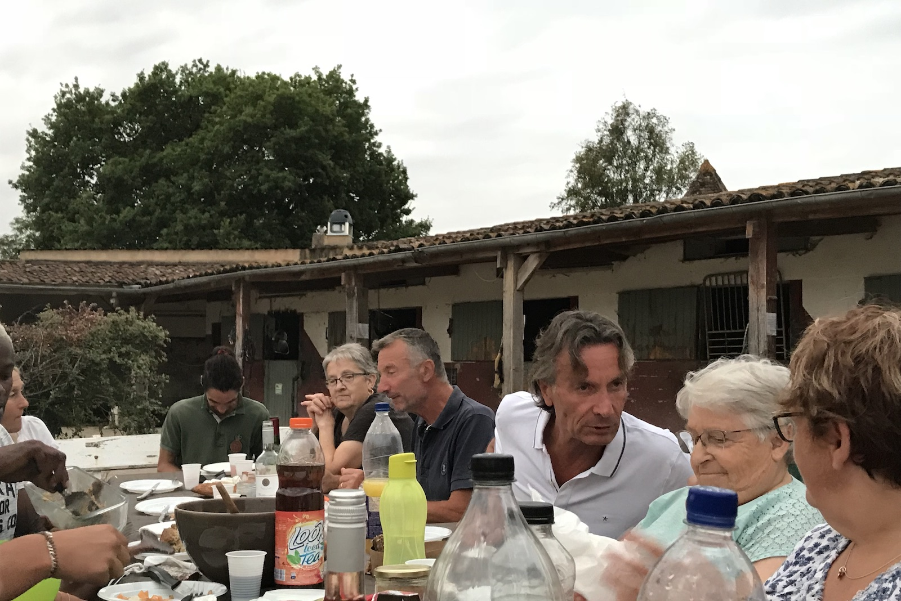

40 hectares au cœur des vignobles. L'équitation au plus près de la nature, du débutant au cavalier de compétition.
« Située à dix minutes au nord de Bergerac, l'écurie vous accueille dans un cadre exceptionnel et verdoyant, sur un terrain de 40 hectares en plein cœur des vignobles. »

Cours collectifs et particuliers, dressage, saut d'obstacles, travail à pied, éthologie, horseball. Une cavalerie sélectionnée, adaptée à tous les niveaux, pour progresser en sécurité et en plaisir.
Découvrir
Des poneys de toutes tailles pour tous les profils d'enfants. Cours débutant, passage des galops, initiation à la compétition. Tous les jours sauf le lundi. Stages pendant toutes les vacances scolaires.
Découvrir
Promenades de 1h, 2h ou à la journée. Tous âges, tous niveaux, même très débutant.
Découvrir
Cavalier professionnel, formateur, jury d'examen BPJEPS : Jacques accompagne chaque cavalier, du tout premier galop au saut d'obstacles de haut niveau.

Paddocks, boxes et grands prés au cœur du Bergeracois : tout le nécessaire pour le bien-être de votre cheval, dans un cadre exceptionnel.
Pour s'entraîner en toutes saisons, sur tous les terrains, du travail sur le plat jusqu'au saut d'obstacles.


Un café entre deux reprises, des fêtes ponctuelles, des sorties en concours régulières. L'équipe vous accueille à bras ouverts.




Les écuries se trouvent à une dizaine de minutes au nord de Bergerac, près de Saint-Julien-de-Crempse. On y vient facilement de Bergerac, Prigonrieux, Lembras, Creysse, La Force ou Lamonzie-Saint-Martin, et d'un peu plus loin comme Mussidan ou Villamblard. En arrivant de Bergerac, les GPS s'arrêtent souvent au manoir : continuez une cinquantaine de mètres, un grand parking se trouve juste après et les écuries sont là.